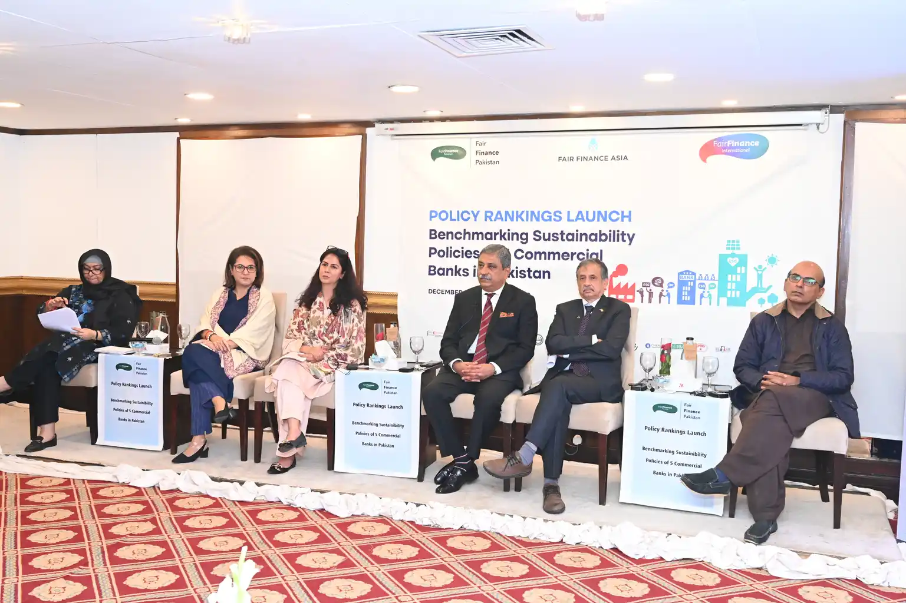
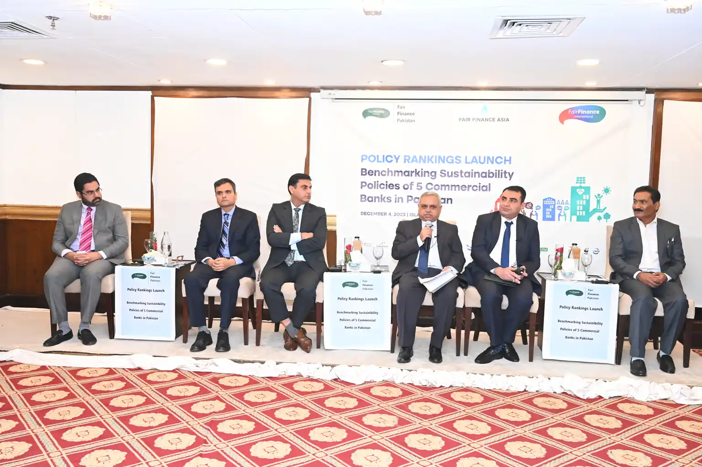

Financial institutions have an immense impact on society. Hence, finance cannot be neutral and must take a wider role for societal good. In this context, Fair Finance Pakistan (FFP) conducted policy assessment of five leading commercial banks in Pakistan with the support of Lahore University of Management Sciences (LUMS) and Profundo to stimulate these FIs to promote social and institutional change.
Fair Finance Pakistan assessed the sustainability policies of Habib Bank Limited (HBL), ,>Allied Bank, National Bank of Pakistan (NBP),Meezan Bank, and Muslim Commercial Bank (MCB). Banks were assessed across ten thematic areas in the Fair Finance Guide International (FFGI) Methodology, including climate change, corruption, gender equality, human rights, labor rights, nature, arms, tax, transparency and accountability and financial consumer protection.Pioneered in 2009 in The Netherlands, FFGI is a rigorous, internationally developed instrument to stimulate a race to the top among financial institutions as well as inform citizens.
On December 4, 2023, Fair Finance Pakistan launched its first ever policy assessment, “Benchmarking the Sustainability Policies of Banks in Pakistan” in Islamabad, Pakistan.
Moderated by Ume Laila Azhar, Executive Director, HomeNet; Nadeem Iqbal, CEO, TheNetwork for Consumer Protection; and Asim Jaffry, Country Program Lead, Fair Finance Pakistan, panel speakers from the banking sector, alongside policy architects, industry leaders, civil society organizations, and consumer advocacy groups convened to advance negotiated, multi-stakeholder solutions— fostering cross-sectoral collaboration and catalyzing collective action toward transformative, industry-wide engagement on sustainable finance.


Panelists engaged in rigorous deliberation on the findings, insights, and recommendations derived from the policy assessment rankings, with a concentrated focus on the banking sector's sustainability trajectory.The session further facilitated substantive discourse on the integration of Environmental, Social, and Governance (ESG) frameworks and the operationalization of human rights due diligence standards within Pakistan's commercial banking landscape.
Panelists issued a compelling call to action, urging Pakistan's commercial banks to urgently adopt, operationalize, and publicly disclose robust policy frameworks encompassing human rights due diligence, gender-responsive finance, anti-corruption measures, and responsible tax practices— in full alignment with Article 19 of the Constitution (Right to Information) — as an imperative step toward embedding climate risk into their core lending and investment mandates.
Private sector representatives spotlight systemic opacity surrounding banks' lending and investment policy disclosures, highlighting persistent and structural underrepresentation of Small and Medium Enterprises (SMEs) in capital allocation — calling financial institutions to reconcile their portfolio priorities with the financing needs of the real economy and the broader sustainable development agenda.
Senator Farhatullah Babar underscored the critically low human rights scores of assessed banks, calling upon institutions to publicly disclose their policies in alignment with constitutional provisions on the right to information, and emphasizing that the absence of such disclosure reflects a fundamental gap in institutional transparency and governance commitments.
Sustainability speakers included Dr. Abid Aman Burki, Professor Emeritus, Lahore University of Management Sciences;Senator Farhatullah Babar,Bushra Shafique,Senior Joint Director, SME Housing and Sustainable Finance Department, State Bank of Pakistan; Mehmood Akhtar Cheema, and Country Representative, IUCN Pakistan;Zafarullah Khan,Convener,Parliamentary Research Group.
The launch featured an exclusive video message by Yong Ye, Country Director, Asian Development Bank, highlighting the Bank’s role on climate change mitigation. Watch the video here .
Chief guest remarks were delivered by Ashfaq Yousuf Tola, Former Minister of State and Ex Chairman, Reforms and Resource Mobilization Commission, Federal Board of Revenue.
Speakers from the financial institutions and business chambers included Musarat Jabeen, Executive Director, Securities and Exchange Commission of Pakistan; Hufrish R. Shroff, SVP– Divisional Head, Organization Effectiveness Division, National Bank of Pakistan; Farhan Ahmad, Head Corporate Affairs, Habib Bank Limited; Siraj Qadir, Group Head Technical Appraisal – Risk Management Group, Allied Bank Limited; Ashar Hasan Khan, Executive Vice President, Head Enterprise Risk Management & BCP, Meezan Bank Limited; Rizwan Chugtai, Division Head, EVP, Muslim Commercial Bank;Zahid Latif, Chairman, Islamabad and Lahore Stock Exchange and Hamza Sarosh, Senior Vice President, Rawalpindi Chamber of Commerce and Industry.
International development partners: Asif Khan, former program manager, Ozone Cell, Ministry of Environment, Government of Pakistan; Mukhtar Ahmed Ali, Executive Director, Center for Peace and Development Initiatives; Dr. Imran Saqib Khalid, Director of Governance & Policy, WWF-Pakistan; Mir Shai Mazar Baloch, Director General Coordination, Senate of Pakistan; Hussain Jarwar, CEO, Indus Consortium; Juliette Laplane, Senior Sustainability Researcher, Profundo; as well as Nadeem Iqbal, CEO, TheNetwork for Consumer Protection.